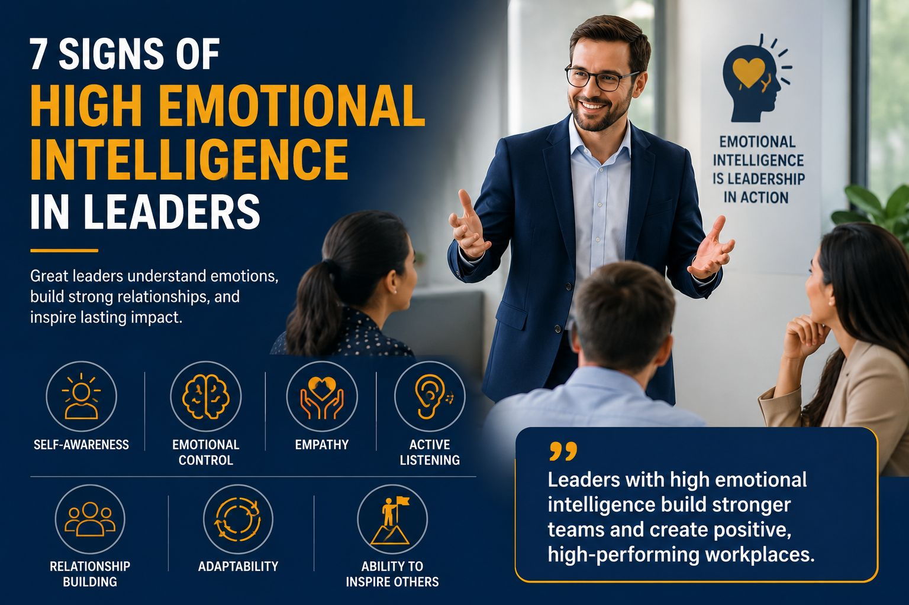

7 Signs of High Emotional Intelligence in Leaders
Published on June 02, 2026 | Leadership Development | 8 Min Read

High emotional intelligence in leaders is demonstrated through self-awareness, emotional control, empathy, active listening, relationship-building, adaptability, and the ability to inspire others. Leaders who possess these qualities communicate more effectively, build stronger teams, resolve conflicts professionally, and create positive workplace cultures.
As workplaces become increasingly collaborative and people-focused, emotional intelligence has emerged as one of the most important leadership skills for long-term success. While technical expertise and industry knowledge remain valuable, leaders who understand and manage emotions effectively often achieve better results and stronger employee engagement.
What Is Emotional Intelligence in Leadership?
Emotional intelligence in leadership refers to the ability to recognize, understand, manage, and influence emotions in a productive way. It involves understanding your own emotions while also recognizing and responding appropriately to the emotions of others.
Leaders with high emotional intelligence are better equipped to:
- Build trust and credibility
- Communicate effectively
- Manage workplace stress
- Resolve conflicts professionally
- Motivate employees
- Strengthen team collaboration
- Create positive workplace cultures
Emotional intelligence helps leaders make better decisions, build stronger relationships, and guide teams through challenges with confidence.
Why Emotional Intelligence Matters for Leaders
Modern leadership is about more than managing tasks and achieving targets. Successful leaders must understand people, build relationships, and create environments where employees feel supported and motivated.
Emotional intelligence helps leaders:
- Improve employee engagement
- Strengthen communication
- Increase team productivity
- Foster collaboration
- Reduce workplace conflicts
- Build trust and loyalty
- Support organizational growth
Organizations with emotionally intelligent leaders often experience stronger workplace cultures, higher employee retention, and better business performance.
Advance Your Career with Industry-Relevant Corporate Certification Programs
Enhance your professional expertise through our Corporate Certification Programs in Business Consulting, Project Management, Digital Marketing, Business Leadership, and Technology. Gain practical knowledge, industry insights, and skills that drive career growth and organizational success.
Explore Certification Programs1. Self-Awareness
What It Means
Self-awareness is the ability to understand your emotions, strengths, weaknesses, values, and behaviors. It is considered the foundation of emotional intelligence because leaders cannot effectively manage others if they do not understand themselves.
Example
A self-aware leader openly accepts constructive feedback and acknowledges mistakes rather than becoming defensive.
Why It Matters
Leaders who understand their emotional triggers make better decisions and respond more thoughtfully to workplace challenges. They are often perceived as authentic, trustworthy, and approachable.
Common Behaviors
- Accepting feedback positively
- Recognizing personal strengths and weaknesses
- Taking responsibility for mistakes
- Demonstrating humility
- Pursuing continuous self-improvement
2. Emotional Control
What It Means
Emotionally intelligent leaders manage their emotions effectively, particularly during stressful situations. They remain calm and professional even when facing uncertainty, setbacks, or conflict.
Example
Instead of reacting impulsively during a workplace crisis, an emotionally intelligent leader takes time to assess the situation and respond strategically.
Why It Matters
Employees often look to leaders for stability during challenging times. Leaders who remain composed under pressure inspire confidence and trust.
Common Behaviors
- Managing stress effectively
- Remaining calm during conflict
- Responding rather than reacting
- Maintaining professionalism
- Making thoughtful decisions under pressure
3. Empathy
What It Means
Empathy is the ability to understand and appreciate the emotions, experiences, and perspectives of others. It allows leaders to connect with employees on a deeper level.
Example
An empathetic manager recognizes when an employee is struggling and takes time to offer support, guidance, or flexibility when appropriate.
Why It Matters
Employees are more likely to trust leaders who genuinely care about their well-being and professional growth.
Common Behaviors
- Showing compassion
- Understanding employee concerns
- Supporting workplace well-being
- Respecting diverse perspectives
- Building meaningful relationships
4. Active Listening
What It Means
Active listening involves giving full attention to others, understanding their message, and responding thoughtfully. Emotionally intelligent leaders listen to understand rather than simply waiting for their turn to speak.
Example
A leader conducting a team meeting encourages employees to share ideas and concerns while listening without interruption.
Why It Matters
Active listening improves communication, strengthens relationships, and helps leaders make more informed decisions.
Common Behaviors
- Asking thoughtful questions
- Paying attention to verbal and non-verbal cues
- Avoiding interruptions
- Clarifying understanding
- Encouraging open dialogue
5. Strong Relationship Building
What It Means
Emotionally intelligent leaders invest time and effort in building positive professional relationships. They understand that trust and collaboration are essential for team success.
Example
A leader regularly checks in with employees, recognizes achievements, and creates opportunities for collaboration.
Why It Matters
Strong workplace relationships contribute to better teamwork, higher morale, and increased employee engagement.
Common Behaviors
- Building trust
- Encouraging collaboration
- Recognizing employee contributions
- Supporting teamwork
- Creating inclusive environments
6. Adaptability
What It Means
Adaptability is the ability to adjust effectively to changing circumstances. Emotionally intelligent leaders remain flexible and open-minded when facing new challenges or opportunities.
Example
A leader successfully guides a team through organizational change by maintaining transparency and encouraging open communication.
Why It Matters
Organizations operate in rapidly changing environments. Leaders who adapt effectively help teams remain resilient and productive.
Common Behaviors
- Embracing change
- Remaining flexible
- Learning continuously
- Supporting innovation
- Demonstrating resilience
7. Ability to Inspire Others
What It Means
Emotionally intelligent leaders understand what motivates people and use that knowledge to encourage growth, engagement, and high performance.
Example
A leader communicates a clear vision and helps employees understand how their work contributes to business growth and organizational success.
Why It Matters
Employees are more likely to stay motivated when they feel valued, appreciated, and connected to a meaningful purpose.
Common Behaviors
- Recognizing achievements
- Providing encouragement
- Supporting professional development
- Communicating purpose
- Leading by example
Empowering Businesses and Future Professionals
From strategic business consulting and project management to innovative Phygital Marketing solutions and Psychology Training-cum-Internship Programs, we provide the expertise and practical learning needed to achieve your goals.
Connect With UsHow to Develop Emotional Intelligence as a Leader
The good news is that emotional intelligence is not a fixed trait. Like any leadership skill, it can be developed through continuous learning and practice.
Practice Self-Reflection
Regularly evaluate your actions, decisions, and interactions to identify opportunities for improvement.
Seek Feedback
Request honest feedback from colleagues, employees, and mentors to gain valuable insights into your leadership style.
Improve Listening Skills
Focus on understanding others rather than immediately responding.
Recommended Reading
Explore our next article, "Top Leadership Skills Every Manager Needs in Today's Workplace", and discover the competencies that define successful leaders in the modern business environment.
Read the BlogDevelop Empathy
Take time to understand different perspectives and consider how workplace decisions affect employees.
Invest in Leadership Development
Participating in leadership development programs can help managers strengthen emotional intelligence, communication, coaching, and people-management capabilities.
Common Signs of Low Emotional Intelligence in Leaders
Understanding what emotional intelligence is not can be equally valuable.
Common signs of low emotional intelligence include:
- Frequent emotional outbursts
- Difficulty accepting feedback
- Poor listening habits
- Lack of empathy
- Blaming others for mistakes
- Resistance to change
- Micromanagement
- Difficulty building trust
Recognizing these behaviors allows leaders to identify improvement areas and develop stronger leadership capabilities.
Frequently Asked Questions
What is emotional intelligence in leadership?
Emotional intelligence in leadership is the ability to understand, manage, and influence emotions while building positive relationships and effectively leading others.
What are the signs of high emotional intelligence in leaders?
The most common signs include self-awareness, emotional control, empathy, active listening, relationship-building, adaptability, and the ability to inspire others.
Why is emotional intelligence important for leaders?
Emotional intelligence improves communication, trust, collaboration, conflict resolution, employee engagement, and overall leadership effectiveness.
Can emotional intelligence be learned?
Yes. Emotional intelligence can be developed through self-awareness, feedback, coaching, leadership training, and continuous practice.
How does emotional intelligence improve workplace performance?
Leaders with high emotional intelligence create positive work environments that increase employee motivation, productivity, engagement, and retention.
Build Emotionally Intelligent Leaders for Long-Term Success
GIFTT Consulting helps professionals and organizations strengthen leadership effectiveness through leadership development, executive coaching, business consulting, and people-management training programs.
Talk to Our ExpertsFinal Thoughts
Emotional intelligence is one of the most important qualities of effective leadership in today's workplace. Leaders who demonstrate self-awareness, emotional control, empathy, active listening, relationship-building, adaptability, and the ability to inspire others are better equipped to build strong teams and achieve sustainable success. If you found these insights valuable, revisit and share this article, 7 Signs of High Emotional Intelligence in Leaders , to help others develop stronger leadership skills.
As organizations continue to evolve, emotional intelligence will remain a critical leadership competency. Leaders who invest in developing emotional intelligence can strengthen workplace relationships, improve employee engagement, and create cultures that support long-term business growth and organizational excellence.
About GIFTT Consulting
GIFTT Consulting helps professionals and organizations build leadership excellence through leadership development, business consulting, project management, and executive training programs designed for long-term success.